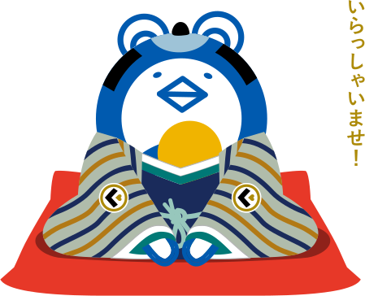
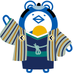
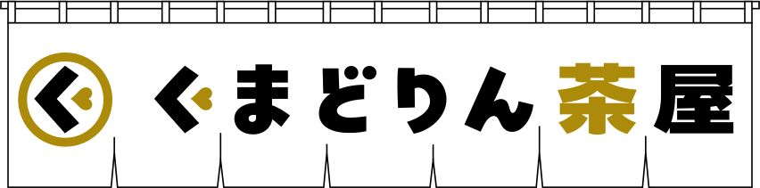

歌舞伎の解説屋さんとして50年。
伝統と新しいお客様の懸け橋となるべく、
歌舞伎ファンとしての視点を大切にしてきました。
歌舞伎の面白さをもっと広く伝えるために、
「なんだか楽しそうな集まり」を作ったら、
ファンの立場からも歌舞伎を盛り上げることができるのでは?
そんな思いから、「くまどりん茶屋」はじめます。
株式会社イヤホンガイド

ごあいさつ
歌舞伎が大好きなお客さまも、
これから歌舞伎を知ってみたいなという方も、
みんなで気軽にあつまれる場所をつくりたかったの～。
どうぞゆっくりしていってくださいなの～。
茶屋亭主 くまどりん
江戸時代から続く日本のライブエンタメ「歌舞伎」。
かつては、芝居小屋の近くにあった芝居茶屋で、歌舞伎見物を楽しむ
合間に食事をしながら芝居談義を楽しむ人たちの姿がありました。
歌舞伎を愛するファンや、歌舞伎に興味がある皆さんが、「歌舞伎」
というキーワードでつながり、情報交換しながら交流できる場。
それが「くまどりん茶屋」です。
こんな皆様のための
サイトです
-
おすすめの歌舞伎情報を
教えてほしい観客視点のリアルな
おすすめポイントがわかります -
興味があるけど、
何をすれば良いかわからない歌舞伎についての素朴な疑問も
気軽に質問OK -
歌舞伎観劇の
楽しみ方を知りたい芝居上演中以外にも
お楽しみがたくさん！
まるごと楽しむための周辺情報も
チェックできます -
観劇後に感想を
たっぷり語りたい同じ舞台を観たもの同士、
観劇アフターの感想戦や、
ネタバレを気にせず
語れる場もあり！

